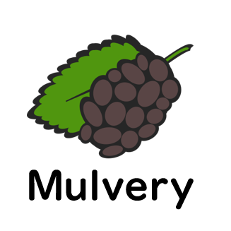

自己紹介
Introduce
- 国立東京農工大学 工学府 博士前期課程 電子情報工学専攻 知能・情報工学専修 中條研究室Doctral Course Student, Nakajo Lab., Intelligence and Information Engineering Cource, Dept. of Electronic and Information Engineering, Grad. Sch. of Eng., Tokyo University of Agriculture and Technology
- 日本学術振興会 特別研究員 DC1JSPS Research Fellowships for Young Scientists DC1
- 平成29年度未踏IT人材発掘・育成事業 スーパークリエータSuper Creator of MITOU Program 2017
経歴
- 2018/4 - now 国立東京農工大学 工学府 博士後期課程 電子情報工学専攻 知能・情報工学専修 中條研究室Doctoral Course Student, Intelligence and Information Engineering Course, Dept. of Electronic and Information Engeneering, Grad. Sch. of Eng., Tokyo University of Agriculture and Technology
- 2017/4 - 2018/3 国立東京農工大学 工学府 博士前期課程 情報工学専攻 中條研究室早期卒業Master of Eng., Nakajo Lab., Dept. of Computer and Information Sciences, Grad. Sch. of Eng., Tokyo University of Agriculture and Technology
- 2015/4 - 2017/4 国立東京農工大学 工学部 情報工学科 中條研究室Bachelor of Eng., Nakajo Lab., Dept. of Computer and Information Sciences, Tokyo University of Agriculture and Technology
- 2010/4 - 2015/3 国立沖縄工業高等専門学校 メディア情報工学科 正木研究室Foundation Degree of Eng., Masaki Lab., Department of Media Information, National Institute of Technology, Okinawa Collage
プロジェクト
Projects

RubyプログラムからCPU+FPGAシステムのアプリケーションを生成するフレームワーク
A framework which synthesis an application for CPU+FPGA systems from software source code written in Ruby
アリの労働力割当てモデルを応用した自律分散システム
An autonomous distributed system using the model of labor allocation of ants
部屋の壁をすべてタッチパネルにする仕組みとアプリプラットフォーム
A system which make room's wall be touch panel, and its application platform
待機電力を発見して自動で削減するコンセント
A electrical outlet system which finds and cuts standby power automatically
研究
Researches
査読付き論文
国内口頭発表
活動
Activities
コンテスト出場
講演・発表
出展
その他の活動
受賞歴
Prizes
メディア掲載
Media Appearances
連絡先
Contact
e-mail
tmarusa83 _at_ gmail.com